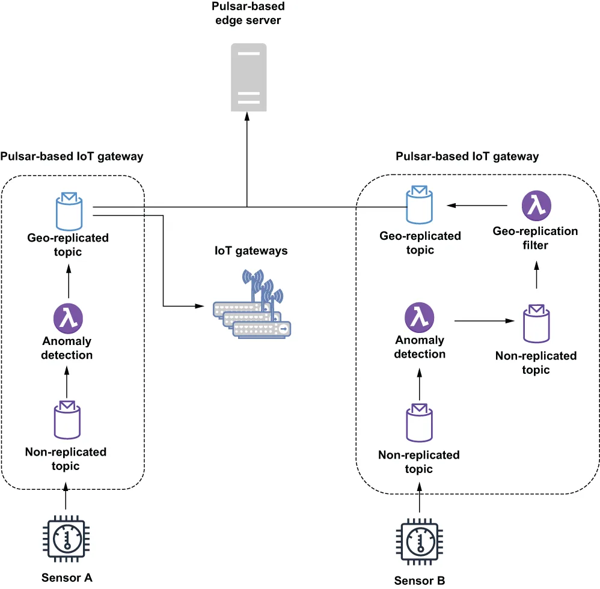

Creating a messaging framework that can be used to transmit messages up from the IoT gateways to the edge servers involves an initial configuration phase to add all of the Pulsar clusters to the same Pulsar instance. As you may recall from chapter 2, a Pulsar instance can contain multiple Pulsar clusters. Being part of the same Pulsar instance is also a prerequisite for enabling geo-replication of data between Pulsar clusters, which, as you saw in figure 12.8, is the preferred mechanism for forwarding the calculated statistical sensor data from the IoT gateways to the edge server.
要创建一个可被用来把消息从各个 IoT 网关向上传输到边缘服务器的消息框架，需要先经过一个初始配置阶段：把所有 Pulsar 集群都加进同一个 Pulsar 实例。你应该还记得第 2 章讲过，一个 Pulsar 实例可以包含多个 Pulsar 集群。同属一个 Pulsar 实例，也是在各个 Pulsar 集群之间启用数据异地复制（geo-replication）的前提条件；而正如你在图 12.8 中所看到的，异地复制正是把那些计算好的统计传感器数据从 IoT 网关转发到边缘服务器的首选机制。
The first phase of this configuration is adding each of the individual IoT gateway-based Pulsar clusters to the same Pulsar instance as the Pulsar cluster running on the edge server. This can be easily achieved using the pulsar-admin command line interface or REST API, as shown in the following listing, which shows the command used to add a single IoT gateway cluster to the Pulsar instance.
这个配置的第一阶段，是把每一个基于 IoT 网关的 Pulsar 集群，都加进与运行在边缘服务器上的那个 Pulsar 集群相同的 Pulsar 实例中。这可以很容易地用 pulsar-admin 命令行界面或 REST API 来完成，如下面这份清单所示——它展示了把单个 IoT 网关集群加进该 Pulsar 实例所用的命令。
Listing 12.5 Adding an IoT gateway cluster to the Pulsar instance
$ pulsar-admin clusters create iot-gateway-1 \ ❶
--broker-url http://<IoT-Gateway-IP>:6650 \ ❷
--url http://<IoT-Gateway-IP>:8080 ❸
$ pulsar-admin clusters list ❹
❶ Each name has to be unique.
❶ 每个名字都必须是唯一的。
❷ URL address of the TCP broker on the gateway
❷ 网关上 TCP broker 的 URL 地址。
❸ Service URL for the gateway
❸ 该网关的服务 URL。
❹ Confirm that the cluster was added to the list.
❹ 确认该集群已被加进列表。
This command has to be run just once for every IoT gateway-based Pulsar cluster in your IIoT environment. Once a cluster has been added to the Pulsar instance, it is able to have messages delivered to it asynchronously via Pulsar’s geo-replication mechanism rather than having to write additional code to perform the data replication.
对你 IIoT 环境中每一个基于 IoT 网关的 Pulsar 集群，这条命令都只需运行一次。一旦某个集群被加进了这个 Pulsar 实例，它就能够通过 Pulsar 的异地复制机制异步地接收投递给它的消息，而不必再编写额外的代码来执行数据复制。
The next step in establishing geo-replication between the IoT gateways and the edge servers is to define a tenant that can be used for bidirectional communication. This can be easily achieved using the pulsar-admin command line interface or REST API, as shown in the following listing, which shows the command to create a new Pulsar tenant that can be accessed by all of the IoT gateway clusters as well as the Pulsar cluster running on the edge servers.
在 IoT 网关与边缘服务器之间建立异地复制的下一步，是定义一个可用于双向通信的租户。这可以很容易地用 pulsar-admin 命令行界面或 REST API 来完成，如下面这份清单所示——它展示了创建一个新 Pulsar 租户的命令，该租户可被所有 IoT 网关集群以及运行在边缘服务器上的那个 Pulsar 集群所访问。
Listing 12.6 Creating a geo-replicated tenant
$ pulsar-admin tenants create iiot-analytics-tenant \
--allowed-clusters iot-gateway-1, iot-gateway-2, ... \ ❶
--admin-roles analytics-role ❷
❶ Provide a complete list of all the IoT gateway clusters you created.
❶ 提供你所创建的全部 IoT 网关集群的完整清单。
❷ Specifies the admin role for this namespace
❷ 指定这个命名空间的管理员角色。
The last step of the configuration process is the creation of a namespace that can be used specifically for the geo-replication of the data between the IoT Gateways and the edge servers. This can be easily achieved using the pulsar-admin command line interface or REST API, as shown in listing 12.7, which shows the command to create a new Pulsar namespace that can be accessed by all of the IoT gateway clusters as well as the Pulsar cluster running on the edge servers. Please note that this replicated namespace has to be within the tenant we created previously. (See appendix B for details on configuring geo-replication between Pulsar clusters.)
这个配置过程的最后一步，是创建一个命名空间，专门用于 IoT 网关与边缘服务器之间的数据异地复制。这可以很容易地用 pulsar-admin 命令行界面或 REST API 来完成，如清单 12.7 所示——它展示了创建一个新 Pulsar 命名空间的命令，该命名空间可被所有 IoT 网关集群以及运行在边缘服务器上的那个 Pulsar 集群所访问。请注意，这个被复制的命名空间必须位于我们此前创建的那个租户之内。（有关在各个 Pulsar 集群之间配置异地复制的细节，请参见附录 B。）
Listing 12.7 Creating a geo-replicated namespace
$ pulsar-admin namespaces create \
iiot-analytics-tenant/analytics-namespace \
--clusters iot-gateway-1, iot-gateway-2, ... ❶
❶ Provide a complete list of all the IoT Gateway clusters you created.
❶ 提供你所创建的全部 IoT 网关集群的完整清单。
Once you create a geo-replicated namespace, any topics that producers or consumers create within that namespace are automatically replicated across all of the clusters. Therefore, any messages published to topics within the geo-replicated namespace on the IoT gateways will automatically be sent asynchronously to the edge server. Unfortunately, this would also result in the message being replicated to all of the other IoT gateways within the IIoT infrastructure, which is not what we want at all. Not only would this inter-gateway replication waste precious network bandwidth, but it would also waste disk space on the gateways themselves, as they would have to store the messages they receive. Since these messages will never be consumed on the other gateways, storing them just wastes disk space.
一旦你创建了一个异地复制命名空间，生产者或消费者在该命名空间内创建的任何主题，都会被自动复制到所有集群。因此，在 IoT 网关上发布到该异地复制命名空间内主题的任何消息，都会被自动异步地发送到边缘服务器。遗憾的是，这也会导致该消息被复制到 IIoT 基础设施内的所有其他 IoT 网关——这根本不是我们想要的结果。这种网关之间的复制不仅会浪费宝贵的网络带宽，还会浪费网关自身的磁盘空间，因为它们必须存储自己收到的那些消息。由于这些消息永远也不会在其他网关上被消费，存储它们纯粹是在浪费磁盘空间。
Therefore, we need to enable selective replication to ensure that the outbound messages that are only intended to be consumed by the edge server are only replicated to the edge server and not across all of the IoT gateways. This can be accomplished by writing a simple Pulsar function that consumes from a local, non-geo-replicated topic on the gateway and publishes it to a geo-replicated topic but restricts the replication to only the edge servers, as shown on the left side of figure 12.12.
因此，我们需要启用选择性复制，以确保那些只打算由边缘服务器消费的出站消息，只被复制到边缘服务器，而不会被复制到所有 IoT 网关。这可以通过编写一个简单的 Pulsar 函数来实现：它从网关上的一个本地的、未被异地复制的主题消费，再把它发布到一个异地复制主题上，但把复制范围限定为只有边缘服务器，如图 12.12 左侧所示。

Figure 12.12 Without the use of a geo-replication filter, the data for sensor A is automatically replicated to all of the IoT gateway clusters in addition to the edge server, whereas data for sensor B is only replicated to the Pulsar cluster running on the edge servers.
图 12.12 如果不使用异地复制过滤器，传感器 A 的数据除了被复制到边缘服务器之外，还会被自动复制到所有 IoT 网关集群；而传感器 B 的数据则只被复制到运行在边缘服务器上的那个 Pulsar 集群。
As you can see in listing 12.8, the Pulsar function used to forward these messages would use the existing producer Java API to restrict the replication of the messages to only the edge cluster, resulting in the message flow shown on the right side of figure 12.12, where the message first goes to a local topic before getting forwarded to a geo-replicated topic, but only to the edge server rather than all of the clusters.
正如你在清单 12.8 中所看到的，用来转发这些消息的那个 Pulsar 函数会使用现有的 producer Java API，把这些消息的复制范围限定为只有边缘集群；由此产生的消息流如图 12.12 右侧所示——消息先进入一个本地主题，随后才被转发到一个异地复制主题，但只被转发到边缘服务器，而不是所有集群。
Listing 12.8 Geo-replication message filter function
public class GeoReplicationFilterFunction implements Function<byte[],Void> {
private boolean initialized = false;
private List<String> restrictReplicationTo;
private Producer<byte[]> producer;
private PulsarClient client;
private String serviceUrl;
private String topicName;
@Override
public Void process(byte[] input, Context ctx) throws Exception {
if (!initialized) {
init(ctx);
}
getProducer().newMessage()
.value(input) ❶
.replicationClusters(restrictReplicationTo) ❷
.send();
return null;
}
private void init(Context ctx) {
serviceUrl = "pulsar://localhost:6650"; ❸
topicName = ctx.getUserConfigValue("replicated-topic").get().toString();❹
restrictReplicationTo = Arrays.asList(
ctx.getUserConfigValue("edge").get().toString()); ❺
initalized = true;
}
private Producer<byte[]> getProducer() throws PulsarClientException {
if (producer == null) {
producer = getClient().newProducer()
.topic(topicName)
.create();
}
return producer;
}
private PulsarClient getClient() throws PulsarClientException {
if (client == null) {
client = PulsarClient.builder().serviceUrl(serviceUrl).build();
}
return client;
}
}
❶ Create a new message using the input bytes.
❶ 用输入的字节创建一条新消息。
❷ Restrict the clusters that the message will be replicated to.
❷ 限制该消息将被复制到哪些集群。
❸ We are publishing to a local geo-replicated topic.
❸ 我们正在发布到一个本地的异地复制主题。
❹ The destination topic should be in the replicated namespace.
❹ 目标主题应当位于那个被复制的命名空间内。
❺ This should be the name of the Pulsar cluster running on the edge servers.
❺ 这应当是运行在边缘服务器上的那个 Pulsar 集群的名称。
The Pulsar function is writing to a geo-replicated topic on the local machine to allow the Pulsar geo-replication mechanism to handle the forwarding of the message rather than sending it directly to the edge server to avoid the synchronous call over the network for each message. Now that we have covered the up direction of the messaging mesh, let’s focus on the down direction of the bidirectional mesh, which is focused on delivering the insights discovered on the edge servers through the analysis of data from multiple sensors back down to the Pulsar functions running on the IoT gateways. In reality, this process is fairly straightforward because all that is required is for the edge servers to publish to a geo-replicated topic and have the interested parties subscribe to the topic to have the messages delivered. Even though the topics are geo-replicated, the messages will not be sent to the IoT gateways unless there is an active consumer of the topic on the gateway node.
这个 Pulsar 函数是写往本地机器上的一个异地复制主题，以便让 Pulsar 的异地复制机制来处理该消息的转发，而不是把它直接发给边缘服务器——这样就避免了为每条消息都发起一次跨网络的同步调用。既然我们已经讲完了这个消息网格的"向上"方向，那么让我们把注意力转向这个双向网格的"向下"方向——它专注于把边缘服务器通过分析多个传感器的数据所发现的那些洞察，向下回传给运行在各个 IoT 网关上的 Pulsar 函数。实际上，这个过程相当直截了当，因为所要做的一切就是：让边缘服务器发布到一个异地复制主题，并让各相关方订阅该主题，消息就会被投递过去。尽管这些主题是被异地复制的，但除非在网关节点上存在该主题的一个活跃消费者，否则消息不会被发送到那些 IoT 网关。